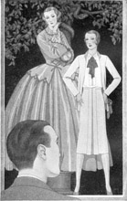

Select any picture to view an
enlargement in a new window
1930—Paris Frocks at Home
Table of Contents
Chapter I—Individuality Budgeted
Chapter II—Be Yourself—Dress Your Part
Chapter III—Let Fabrics Work Their Magic
Chapter IV—Color: Friend or Enemy
Chapter V—Your Pattern a Personal Shopper
Chapter VI—Suiting Patterns to Proportions
Chapter VII—Cutting Up Artfully
Chapter VIII—Baste to Make Sewing Easy
Chapter IX—The Mystery of Fitting—Solved
Chapter X—A Good Start Deserves a Good Finish
Chapter XI—Keeping Paris Frocks Up-to-Date
Chapter XII—Pressing Needs for Pressing
Chapter XIII—Tubbing Paris Frocks at Home
It has always been true: costumes individually created have that indefinable quality of charm that never fails to win interest and approval.